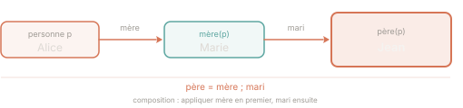

Prérequis : Cours — Relations binaires, fonctions partielles & composition relationnelle
On se donne un type de base PERSONNE (l'ensemble de toutes les personnes
concevables) et un sous-ensemble personne ⊆ PERSONNE représentant
les individus effectivement présents dans le modèle.
L'exercice construit pas à pas une spécification formelle : les premières spécifications (R1–R2) introduisent les sous-ensembles fondamentaux ; les suivantes (R3–R6) posent des contraintes sur les relations familiales ; les dernières (R7–R10) définissent des relations dérivées.
R ⊆ A × B — R est une relation entre A et B (ensemble de paires)R ∈ A ⇸ B — R est une fonction partielle de A vers B (chaque élément de A a au plus une image)R ∈ A ↣ B — R est une injection partielle (fonction partielle injective : deux éléments distincts de A ont des images distinctes)dom(R) — ensemble des éléments de gauche ayant une image dans Rran(R) — ensemble des images (éléments de droite) de RR⁻¹ — relation inverse de R (on échange les rôles gauche/droite)R ; S — composition de R puis S : appliquer R d'abord, puis SRelation : R ⊆ A × B — une paire (a, b) signifie
« a est en relation avec b ».
Fonction partielle f ∈ A ⇸ B — chaque élément de A a
au plus une image dans B. Autrement dit : si (a, b1) ∈ f et
(a, b2) ∈ f, alors b1 = b2.
Injection partielle f ∈ A ↣ B — fonction partielle
et injective : deux éléments distincts de A ont des images distinctes.
Autrement dit : si (a1, b) ∈ f et (a2, b) ∈ f, alors a1 = a2.
| Type | Notation | Contrainte | Exemple intuitif |
|---|---|---|---|
| Relation | R ⊆ A × B | Aucune | « connaît » |
| Fonction partielle | f ∈ A ⇸ B | Chaque a a ≤ 1 image | numéro de téléphone (optionnel, unique par personne) |
| Injection partielle | f ∈ A ↣ B | Chaque a a ≤ 1 image et chaque b a ≤ 1 antécédent | numéro de sécurité sociale |
Composition : (R ; S)(x) = S(R(x)) — on applique R
en premier, puis S sur le résultat.
Inverse : R⁻¹ = {(b, a) | (a, b) ∈ R} — on échange gauche et droite.
Donner la représentation formelle de :
homme et
femme couvrent personne en entier (couverture).
R2 dit qu'ils sont disjoints (partition). Les deux ensemble forment une partition
de personne, mais chaque propriété s'exprime séparément.
personne est dans homme ou dans femme »
— cela se traduit par une égalité ensembliste ou une inclusion.homme et dans
femme » — cela se traduit par une intersection vide.
personne = homme ∪ femmehomme ∩ femme = ∅
R1 : personne = homme ∪ femme
Chaque personne du modèle est un homme ou une femme (ou les deux — mais R2 exclura ce cas).
R2 : homme ∩ femme = ∅
Les deux sous-ensembles sont disjoints. Combinées, R1 et R2 signifient que homme et femme forment une partition de personne.
Donner la représentation formelle de :
∀ p · p a un mari ⇒ p ∈ femme) sans préciser que le mari lui-même
est un homme. R3 contraint simultanément le domaine de la relation
(les épouses sont des femmes) et le codomaine (les maris sont des hommes).
mari : son domaine est dans femme
et son codomaine dans homme.mari est une fonction partielle.mari ⊆ femme × hommemari ∈ femme ⇸ hommemari ∈ femme ↣ homme
Méthode
⇸).↣).R3 : mari ⊆ femme × homme
Le domaine de mari est contenu dans femme et le codomaine dans homme.
R4 : mari ∈ femme ⇸ homme
La relation devient une fonction partielle : chaque femme a au plus un mari (elle peut ne pas en avoir).
R5 : mari ∈ femme ↣ homme
La fonction est en outre injective : deux femmes distinctes ne peuvent pas être mariées au même homme. R5 renforce R4 — l'injection partielle implique déjà la fonction partielle.
mari ∈ femme ↣ homme (injection partielle de femme vers
homme). C'est la notation la plus concise qui capture les trois contraintes d'un coup.
ran(mère) ⊆ femme (les mères sont des femmes),
ce qui est vrai mais insuffisant. R6 exige en plus que ces femmes soient mariées,
c'est-à-dire qu'elles appartiennent au domaine de la relation mari.
mère ⊆ personne × femme associe chaque personne à sa mère.
L'ensemble de toutes les mères est ran(mère).
L'ensemble des femmes mariées est dom(mari).
Exprimer que toutes les mères sont mariées revient à inclure ran(mère) dans dom(mari).
R6 : ran(mère) ⊆ dom(mari)
ran(mère) est l'ensemble de toutes les femmes qui sont mères de quelqu'un
dans le modèle. dom(mari) est l'ensemble des femmes mariées (celles qui ont
un mari dans la relation mari). L'inclusion garantit que toute mère est mariée.
Définir les relations suivantes en termes des relations déjà introduites
(mère, mari) et des opérations relationnelles (composition ;,
union ∪, inverse ⁻¹) :
mère ; mari signifie « appliquer mère d'abord, puis mari ».
Appliqué à une personne p : on obtient la mère de p, puis le mari
de cette mère — ce qui est bien le père de p. L'ordre est crucial.
père = mère ; mari.p1 et p2 sont frères/sœurs
si elles ont un parent commun et ne sont pas la même personne.{(p1, p2) ∈ personne × personne | p1 ≠ p2 ∧ ∃ par ∈ personne · (p1, par) ∈ parent ∧ (p2, par) ∈ parent}(parent ; parent⁻¹) \ id_personne

Exemple — R7 (père)
Soit mère(Alice) = Marie et mari(Marie) = Jean.
Alors (mère ; mari)(Alice) = mari(mère(Alice)) = mari(Marie) = Jean.
Jean est bien le père d'Alice — la composition donne le résultat attendu.
Analogie — R10 (frère–sœur)
Intuition : parent ; parent⁻¹ permet de « remonter » vers
un parent commun puis de « redescendre » vers tous ses enfants.
On exclut ensuite la paire (p, p) avec \ id_personne
pour ne pas compter une personne comme sa propre sœur.
R7 — père
père = mère ; mari
La composition mère ; mari associe une personne p
au mari de sa mère, c'est-à-dire à son père.
père ∈ personne ⇸ homme (fonction partielle, car tout le monde n'a
pas forcément un père modélisé).
R8 — parent
parent = mère ∪ père = mère ∪ (mère ; mari)
Un parent est soit la mère soit le père. L'union des deux relations couvre les deux cas.
R9 — enfant
enfant = parent⁻¹
Si (p, par) ∈ parent signifie « par est un parent de p »,
alors (par, p) ∈ parent⁻¹ signifie « p est un enfant de par ».
L'inversion échange les rôles.
R10 — frère–sœur
frère_soeur = {(p1, p2) ∈ personne × personne | p1 ≠ p2 ∧ ∃ par ∈ personne · (p1, par) ∈ parent ∧ (p2, par) ∈ parent}
Ou de façon équivalente en notation relationnelle :
frère_soeur = (parent ; parent⁻¹) \ id_personne
parent ; parent⁻¹ donne toutes les paires de personnes partageant un parent commun
(y compris (p, p)). On soustrait l'identité id_personne
pour exclure la paire d'une personne avec elle-même.
(Alice, Marie) ∈ parent et (Bob, Marie) ∈ parent → (Alice, Bob) ∈ parent ; parent⁻¹ ✓(Alice, Alice) ∈ parent ; parent⁻¹ mais exclu par \ id_personne ✓frère_soeur telle que définie est-elle symétrique ? Est-elle réflexive ? Justifiez.ancêtre — la clôture transitive de parent — en notation formelle. Quel opérateur utilise-t-on ?père = mère ; mari reste-t-elle bien définie ? Pourquoi R6 la renforce-t-elle intuitivement ?